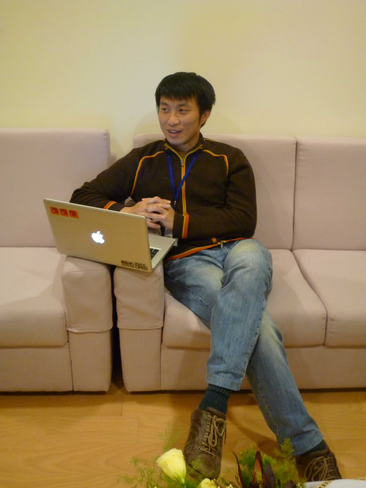

感謝您對「自由軟體鑄造場」的支持與愛護，十多年來「自由軟體鑄造場」受中央研究院支持，並在資訊科學研究所以及資訊科技創新研究中心執行，現已完成階段性的任務。 原網站預計持續維運至 2021年底，網站內容基本上不會再更動。本網站由 Denny Huang 備份封存。
也紀念我們永遠的朋友 李士傑先生（Shih-Chieh Ilya Li）。
也紀念我們永遠的朋友 李士傑先生（Shih-Chieh Ilya Li）。
專訪 OSDC.TW 2011 推手簡信昌
建立日期 2011-04-11 11:24 最近更新在 2011-07-13 17:58
每年到了三、四月最令本地開源人期待的社群活動非 OSDC.TW (Open Source Developers' Conference, Taiwan) 莫屬，本年度的 OSDC.TW 2011 也已於上個月在中央研究院人社館國際會議廳圓滿落幕。今年的 OSDC 2011 吸引了四百人次的參與者，隨著參加人數逐年增加的狀況，可以看出 OSDC.TW 已經成為國內開源人每年必定參加的大型社群活動之一。OSDC.TW 的前身是以探討 Perl 程式語言為主的開發者聚會，原本僅是台北 Perl 推廣組的社群活動，2006 年時轉變為眾多社群共同參與的盛會，從單一的社群活動轉型為年度開放源碼的大型社群聚會活動；這樣的成果除了靠社群朋友們熱情協助外，最主要的幕後推手便是在會場中拿著筆電全場來回奔走的簡信昌 (hcchien)。可以說 OSDC.TW 2010 年以前的歷屆活動，所有的事前籌劃均出自 hcchien 一人之手，而今年是第一次有其他的社群夥伴一同加入活動的事前討論與籌劃工作。
往年 hcchien 獨自一人籌劃歷屆的 OSDC.TW，當本次 OSDC.TW 2011 活動會後被問到累不累時，他笑著說：「當然會累啊！每次活動結束後，別人問說明年會不會繼續辦下去，我都說不知道。」不過他也表示，辦 OSDC.TW 就像舉辦小學同學會一樣，雖然每次都說明年不知道會不會辦，但一旦辦了就會有朋友來參與，因此每當到了籌備的時間，hcchien 腦袋裡的生理時鐘就會自動運轉起來，並催促自己開始籌劃相關的活動事宜；對 hcchien 來說，舉辦 OSDC.TW 這個大型社群同學會，讓老朋友有機會見見面聊聊天、交流新技術是很開心的事。
一直以來 OSDC.TW 外國講者的比例佔了很大一部分，網站活動議程的呈現方式也是以英文資訊為主，不難看出主辦者希望台灣軟體技術能與國際接軌的用心。hcchien 表示，畢竟在技術資訊取得來講國外還是比較快，因此邀請許多國外講者來台分享國外最新的開發技術與經驗談，是每年 OSDC.TW 籌劃工作裡的重要項目。
其實辦 OSDC.TW 不只是讓大家見面寒暄並交流新技術而已，hcchien 說明其背後的用意，是希望藉由舉辦大型活動讓大家更能關注開放源碼這塊領域，提高 Open Source 在台灣的能見度，透過 OSDC.TW 在 Open Source 知識方面自由分享的作法，進一步改善台灣軟體專案的開發環境。從事軟體開發工作多年的 hcchien 提到，台灣科技產業有很大的問題是人才都到硬體公司工作，在軟體開發方面則一直都是相對弱勢，因此希望藉由這樣的大型開源活動能帶起些許改變的漣漪，從而能夠鼓勵有志者一同來改善台灣軟體的開發環境，讓台灣在軟體發展方面有更大的突破。
hcchien 也提到在籌辦過程中觀察到的有趣現象，很多有在參與開源專案的國外講者其實都會自費到各國演講，而國內許多社群朋友自己去外面開公司賺錢後也會回來贊助 OSDC.TW 的活動舉辦，這些現象都再次說明了開源人共通的特質，熱情、積極與不吝於分享的精神。其實，OSDC.TW 最吸引人的地方並非真是設計了哪些別出心裁的活動、安排哪些引人奇想的議題，在這些背後更重要的，應該是促進國內開源人的固定相聚與交流，這樣的精神，是勝於一切演講內容的珍貴價值！
專欄總覽


自由軟體鑄造場 製作 最佳瀏覽狀態：IE7或Firefox2.0以上 (建議使用Firefox) ‧ 解析度1024*768
E-Mail：contact@openfoundry.org Address：台北市南港區研究院路2段128號 中央研究院資訊科學研究所 . 隱私權條款. 使用條款
E-Mail：contact@openfoundry.org Address：台北市南港區研究院路2段128號 中央研究院資訊科學研究所 . 隱私權條款. 使用條款